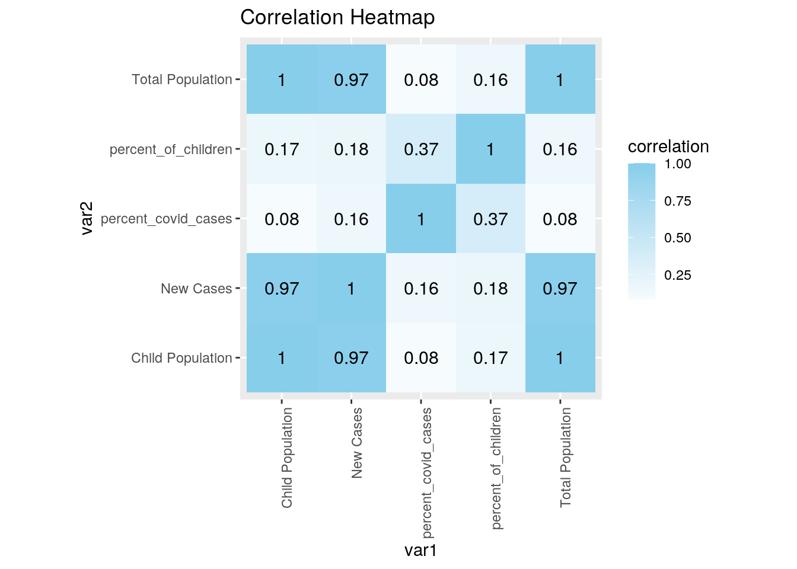
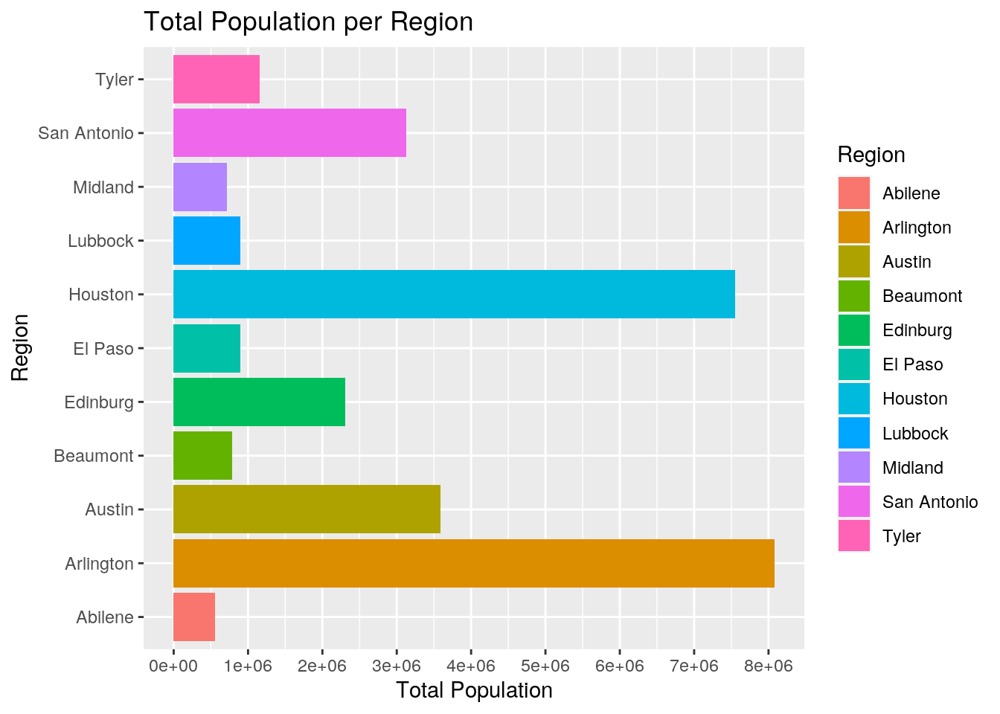
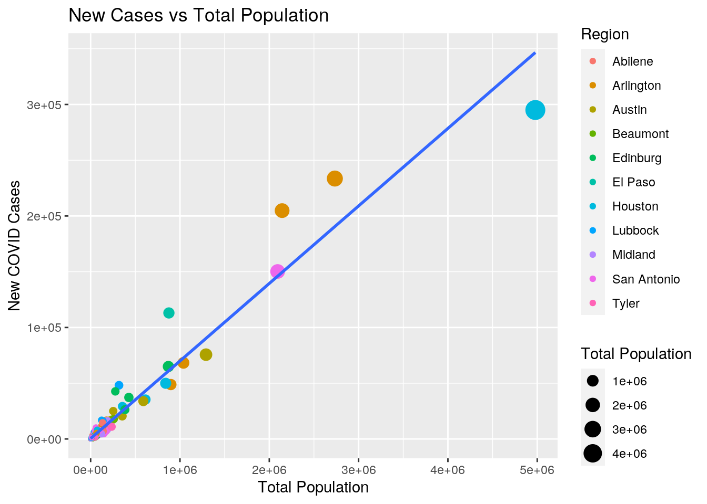
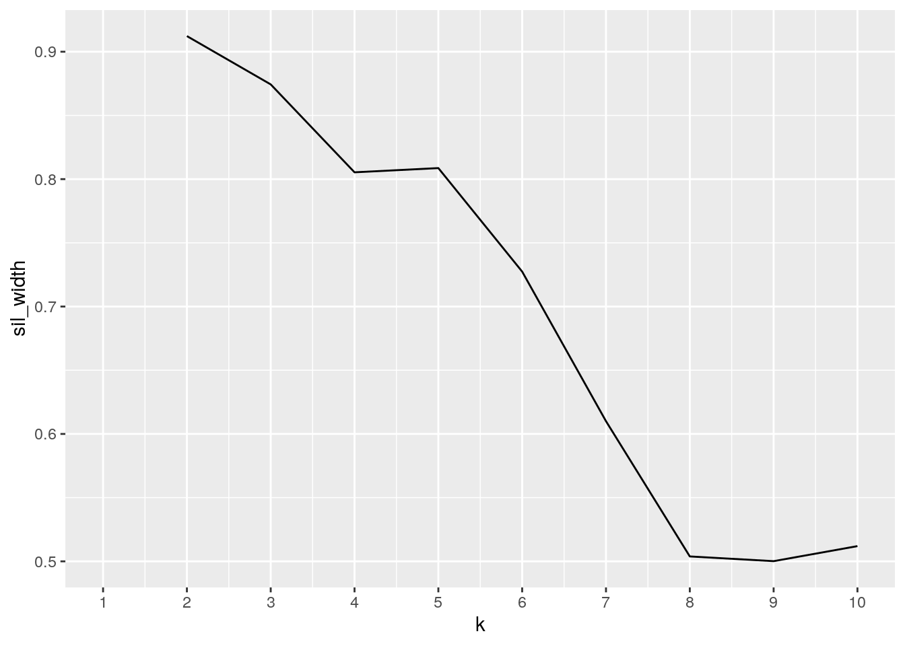
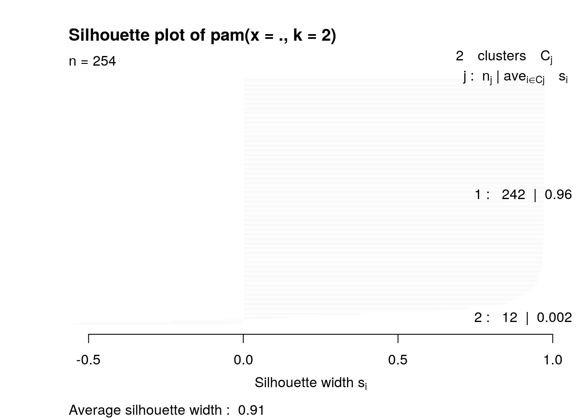
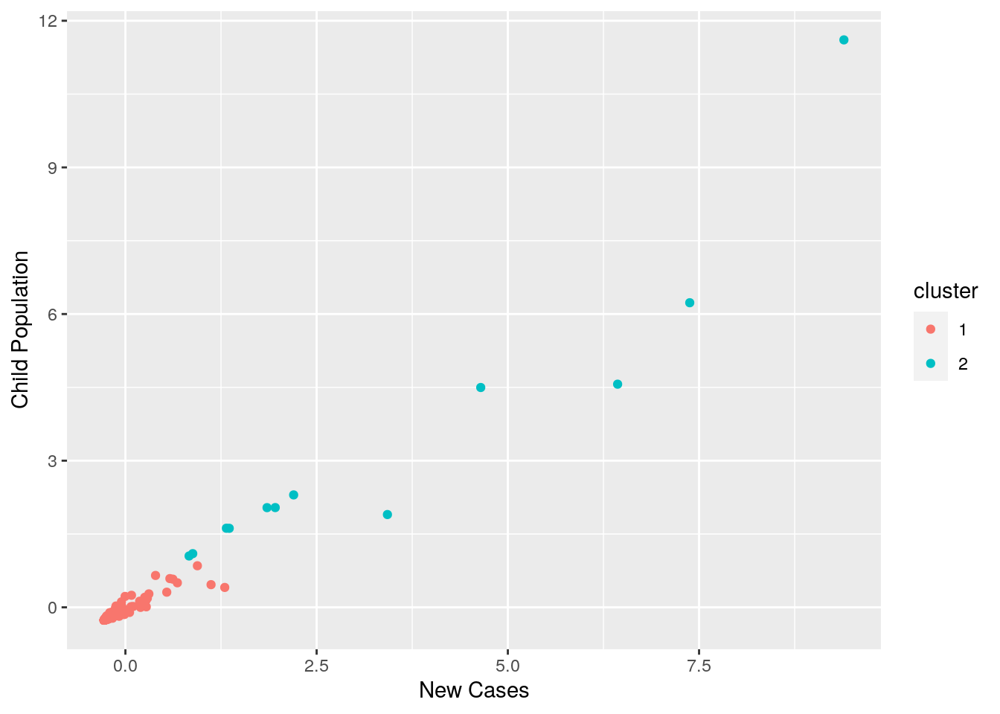
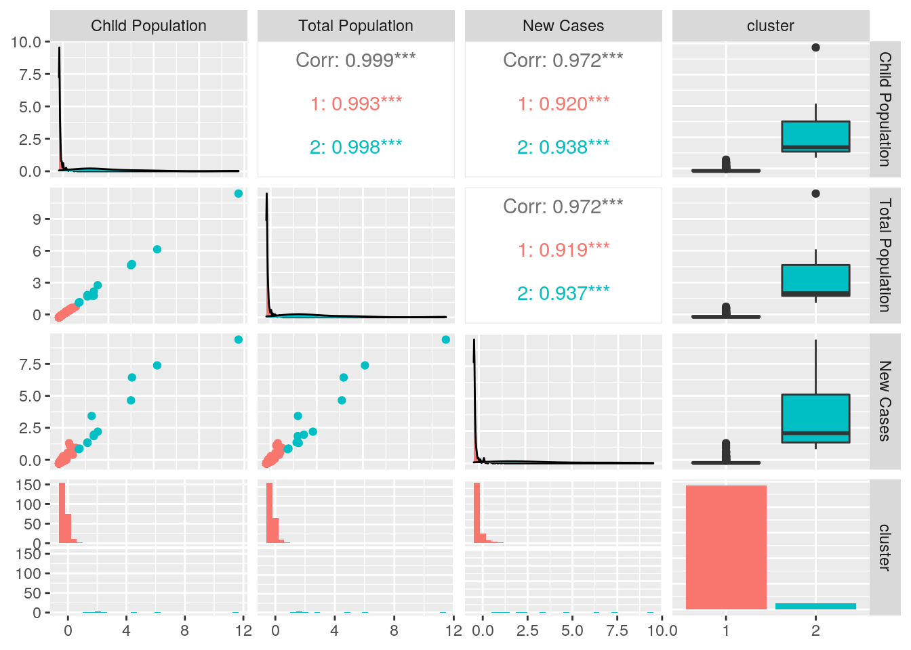

Abigail Weber amw4996
One of the data sets I am using in this project is called Texas Child Population by County from 2010-2020. The data frame contains the year, county, region, child population, percent of children in the total population, and the total population. The other data set I selected portrays the number of COVID cases per Texas county from March 4, 2020 until December 30, 2020. I chose to look at COVID data because I am passionate about public health and healthcare. I thought it would be interesting to see if there was a trend or any correlation between how many COVID cases a Texas county had and the proportion of kids in that county. I suspect that bigger counties will have greater COVID cases.
library(tidyverse)
child_pop <- read_csv("Texas.Child.Population.csv")
covid_cases <- read_csv("COVID_Cases.csv")
covid_cases <- covid_cases %>% rename(County = County1, Latitude = `Latitude (generated)`,
Longitude = `Longitude (generated)`)
child_pop_noNA <- na.omit(child_pop)
child_pop_sep_noNA <- child_pop_noNA %>% separate(Region, into = c("Region_Number",
"Region"), sep = "-", convert = TRUE)
covid_cases_noNA <- na.omit(covid_cases) %>% select(-Latitude) %>%
select(-Longitude)
child_pop_wider <- child_pop_noNA %>% pivot_wider(names_from = "Region",
values_from = "County")
retidy <- child_pop_wider %>% pivot_longer(5:15, names_to = "Region",
values_to = "County") %>% na.omit()The COVID_cases data set was found already tidy. The child_pop data set was not completely tidy. Under the region column, there was a numeric indicator of the region, and a character description of what the region is. In order to make this dataset tidy, the Region column needed to be split. I used the separate function to do this. At this point, both of these data sets are tidy and they both contain no NAs. Because I did not have to use pivot_wider and pivot_longer, I untidied child_pop and retidied it back. Lastly, in order to make the joining easier, I removed all NAs. There were only NAs in the child_pop data set. The NAs that were removed were fine because there were only NAs at the end of each year under “All Counties” and “All Regions”. We were just using 2020, so it was okay for this variable to be dropped. None of the NAs removed in the child_pop data set were in 2020, so that data is still safe for the rest of the project.
child_pop_sep_noNA <- child_pop_sep_noNA %>% filter(Year == 2020)
covid_cases_noNA = replace(covid_cases_noNA, covid_cases_noNA ==
"Mcculloch", "McCulloch")
covid_cases_noNA = replace(covid_cases_noNA, covid_cases_noNA ==
"Mclennan", "McLennan")
covid_cases_noNA = replace(covid_cases_noNA, covid_cases_noNA ==
"Mcmullen", "McMullen")
covid_cases_noNA = replace(covid_cases_noNA, covid_cases_noNA ==
"De Witt", "DeWitt")
joined_data <- full_join(child_pop_sep_noNA, covid_cases_noNA,
by = "County")Before doing the full_join, I filtered the child_pop data set to reflect values only from 2020. I did this because we only had COVID data for the year 2020. As such, child data from years prior to 2020 would not be meaningful to this join. In addition, before the full_join, I noticed that some of the spellings of counties in covid_cases did not match the spellings of counties in child_pop. Therefore, I had to change some of the spellings of counties in covid_cases to match child_pop. After this, I was ready to perform a full_join. I did a full_join because I wanted to preserve all of the categories from both data sets in order to perform summary statistics. Doing any other join would not result in a lot of columns overall because the two data sets only have one common variable. Because I had already filtered down the child_pop data set to only include 2020, no cases were dropped. It makes sense for the joined data set to have 254 observations because there are 254 counties in Texas.
joined_data <- joined_data %>% mutate(percent_of_children = (`Child Population`/`Total Population`) *
100)
joined_data <- joined_data %>% mutate(percent_covid_cases = round((`New Cases`/`Total Population`) *
100, digits = 0))
view(joined_data)
joined_data %>% filter(County == "Burnet")## # A tibble: 1 x 10
## Year County Region_Number Region `Child Populati… `% of Children …
## <dbl> <chr> <int> <chr> <dbl> <dbl>
## 1 2020 Burnet 7 Austin 10343 21
## # … with 4 more variables: `Total Population` <dbl>, `New Cases` <dbl>,
## # percent_of_children <dbl>, percent_covid_cases <dbl>joined_data %>% select(County, `New Cases`) %>% arrange(desc(`New Cases`))## # A tibble: 254 x 2
## County `New Cases`
## <chr> <dbl>
## 1 Harris 295043
## 2 Dallas 233569
## 3 Tarrant 204809
## 4 Bexar 150225
## 5 El Paso 113017
## 6 Travis 75617
## 7 Collin 68279
## 8 Hidalgo 65011
## 9 Fort Bend 49937
## 10 Denton 48806
## # … with 244 more rowsjoined_data %>% group_by(Region) %>% arrange(desc(Region_Number))## # A tibble: 254 x 10
## # Groups: Region [11]
## Year County Region_Number Region `Child Populati… `% of Children …
## <dbl> <chr> <int> <chr> <dbl> <dbl>
## 1 2020 Arans… 11 Edinb… 5226 19
## 2 2020 Bee 11 Edinb… 7568 22
## 3 2020 Brooks 11 Edinb… 1836 26
## 4 2020 Camer… 11 Edinb… 124912 29
## 5 2020 Duval 11 Edinb… 3077 26
## 6 2020 Hidal… 11 Edinb… 258163 30
## 7 2020 Jim H… 11 Edinb… 1477 29
## 8 2020 Jim W… 11 Edinb… 12078 28
## 9 2020 Kenedy 11 Edinb… 101 21
## 10 2020 Klebe… 11 Edinb… 6964 22
## # … with 244 more rows, and 4 more variables: `Total Population` <dbl>, `New
## # Cases` <dbl>, percent_of_children <dbl>, percent_covid_cases <dbl>joined_data %>% summarize(mean(`Total Population`))## # A tibble: 1 x 1
## `mean(\`Total Population\`)`
## <dbl>
## 1 116841.joined_data %>% summarize(sd(`Total Population`))## # A tibble: 1 x 1
## `sd(\`Total Population\`)`
## <dbl>
## 1 426552.joined_data %>% summarize(var(`Total Population`))## # A tibble: 1 x 1
## `var(\`Total Population\`)`
## <dbl>
## 1 181946545420.joined_data %>% summarize(quantile(`Total Population`))## # A tibble: 5 x 1
## `quantile(\`Total Population\`)`
## <dbl>
## 1 92
## 2 6854.
## 3 18956.
## 4 51824.
## 5 4978845joined_data %>% summarize(min(`Total Population`))## # A tibble: 1 x 1
## `min(\`Total Population\`)`
## <dbl>
## 1 92joined_data %>% summarize(max(`Total Population`))## # A tibble: 1 x 1
## `max(\`Total Population\`)`
## <dbl>
## 1 4978845joined_data %>% summarize(mean(`Child Population`))## # A tibble: 1 x 1
## `mean(\`Child Population\`)`
## <dbl>
## 1 29587.joined_data %>% summarize(sd(`Child Population`))## # A tibble: 1 x 1
## `sd(\`Child Population\`)`
## <dbl>
## 1 112083.joined_data %>% summarize(mean(percent_of_children))## # A tibble: 1 x 1
## `mean(percent_of_children)`
## <dbl>
## 1 23.3joined_data %>% summarize(mean(percent_covid_cases))## # A tibble: 1 x 1
## `mean(percent_covid_cases)`
## <dbl>
## 1 6.47joined_data %>% summarize(n_distinct(`Total Population`))## # A tibble: 1 x 1
## `n_distinct(\`Total Population\`)`
## <int>
## 1 253joined_data %>% summarize(mean(`New Cases`))## # A tibble: 1 x 1
## `mean(\`New Cases\`)`
## <dbl>
## 1 8533.joined_data %>% summarize(sd(`New Cases`))## # A tibble: 1 x 1
## `sd(\`New Cases\`)`
## <dbl>
## 1 30500.joined_data %>% summarize(quantile(`New Cases`))## # A tibble: 5 x 1
## `quantile(\`New Cases\`)`
## <dbl>
## 1 0
## 2 382.
## 3 1214.
## 4 3170.
## 5 295043joined_data %>% summarize(min(`New Cases`))## # A tibble: 1 x 1
## `min(\`New Cases\`)`
## <dbl>
## 1 0joined_data %>% summarize(max(`New Cases`))## # A tibble: 1 x 1
## `max(\`New Cases\`)`
## <dbl>
## 1 295043joined_data %>% group_by(Region) %>% summarize(sd(`Child Population`))## # A tibble: 11 x 2
## Region `sd(\`Child Population\`)`
## <chr> <dbl>
## 1 Abilene 7755.
## 2 Arlington 200596.
## 3 Austin 59204.
## 4 Beaumont 14911.
## 5 Edinburg 65320.
## 6 El Paso 98530.
## 7 Houston 360525.
## 8 Lubbock 13076.
## 9 Midland 13871.
## 10 San Antonio 99594.
## 11 Tyler 12253.joined_data %>% group_by(Region) %>% summarize(mean(`New Cases`))## # A tibble: 11 x 2
## Region `mean(\`New Cases\`)`
## <chr> <dbl>
## 1 Abilene 1389.
## 2 Arlington 34527.
## 3 Austin 7605.
## 4 Beaumont 2555.
## 5 Edinburg 10331.
## 6 El Paso 19183.
## 7 Houston 35819.
## 8 Lubbock 2672.
## 9 Midland 1430.
## 10 San Antonio 7816.
## 11 Tyler 2390.joined_data %>% group_by(Region, County) %>% summarize(mean(`New Cases`))## # A tibble: 254 x 3
## # Groups: Region [11]
## Region County `mean(\`New Cases\`)`
## <chr> <chr> <dbl>
## 1 Abilene Archer 545
## 2 Abilene Baylor 111
## 3 Abilene Brown 1917
## 4 Abilene Callahan 484
## 5 Abilene Clay 721
## 6 Abilene Coleman 353
## 7 Abilene Comanche 926
## 8 Abilene Cottle 120
## 9 Abilene Eastland 751
## 10 Abilene Fisher 290
## # … with 244 more rowsjoined_data %>% filter(Region == "Beaumont") %>% summarize(sum(`Total Population`))## # A tibble: 1 x 1
## `sum(\`Total Population\`)`
## <dbl>
## 1 785117joined_data %>% summarize(min(percent_of_children))## # A tibble: 1 x 1
## `min(percent_of_children)`
## <dbl>
## 1 13.8joined_data %>% summarize(max(percent_of_children))## # A tibble: 1 x 1
## `max(percent_of_children)`
## <dbl>
## 1 33.2To use the mutate function, I decided to verify the Percent of Children in the population by calculating it myself. From what I saw, the column existing in the original child_pop data set was pretty rounded. I used the filter function to look specifically at the county of my hometown, Burnet County. I saw that in Burnet County, children make up about 21.46% of the total population and we had a little shy of 3,000 of COVID cases from March 4, 2020 until December 30, 2020. Next, I used the select function to look at both Counties and COVID cases in combination with arrange in order to see which county had the most COVID cases in 2020. Harris County had the most with 295,043 cases. For the next line, I used the group_by function to group the data set by Region Number, Region, and County. Then, I arranged by descending Region_Number. I saw that the last region number was 11 and it codes for Edinburg. When I did the next few summarize functions, I obtains some interesting data about the state of Texas as a whole. The mean total population of Texas is 116841.2, the sd is 426551.9, the var is 181946545420, the quantiles were 92.00, 6853.50, 18955.50, 51823.75, and 4978845.0. The minimum population of an entire county in Texas was 92, the max of a county in Texas 4978845. Lastly, there were 253 distinct observations in the total population over all the counties in Texas. I did the same summarize functions to the New Cases Column and obtained useful data for the amount of COVID cases in Texas over 2020. Next, I grouped by region and found that the region with the region with the most COVID cases was Houston, followed closely by Arlington, followed more distantly by El Paso. Simarily, the region with the most children was Houston, Arlington, followed by San Antonio.
cormat_joined <- joined_data %>% select(-1, -3, -6) %>% select_if(is.numeric) %>%
cor(use = "pair")
tidycor_joined <- cormat_joined %>% as.data.frame %>% rownames_to_column("var1") %>%
pivot_longer(-1, names_to = "var2", values_to = "correlation")
tidycor_joined## # A tibble: 25 x 3
## var1 var2 correlation
## <chr> <chr> <dbl>
## 1 Child Population Child Population 1
## 2 Child Population Total Population 0.999
## 3 Child Population New Cases 0.972
## 4 Child Population percent_of_children 0.169
## 5 Child Population percent_covid_cases 0.0844
## 6 Total Population Child Population 0.999
## 7 Total Population Total Population 1
## 8 Total Population New Cases 0.972
## 9 Total Population percent_of_children 0.160
## 10 Total Population percent_covid_cases 0.0818
## # … with 15 more rows# heatmap
tidycor_joined %>% ggplot(aes(var1, var2, fill = correlation)) +
geom_tile() + scale_fill_gradient2(low = "red", mid = "white",
high = "sky blue") + geom_text(aes(label = round(correlation,
2)), color = "black", size = 4) + coord_fixed() + theme(axis.text.x = element_text(angle = 90,
hjust = 1)) + ggtitle("Correlation Heatmap")
# graph 1
region_pop <- joined_data %>% group_by(Region) %>% summarize(sum(`Total Population`)) %>%
rename(Total_Pop = "sum(`Total Population`)")
ggplot(region_pop, aes(x = Region, y = Total_Pop, fill = Region)) +
geom_bar(stat = "summary") + scale_y_continuous(breaks = seq(from = 0,
to = 9e+06, by = 1e+06)) + ggtitle("Total Population per Region") +
ylab("Total Population") + xlab("Region") + coord_flip()
# graph 2
ggplot(joined_data, aes(x = `Total Population`, y = `New Cases`)) +
geom_point(aes(size = `Total Population`, color = Region)) +
geom_smooth(method = "lm", se = F) + ggtitle("New Cases vs Total Population") +
ylab("New COVID Cases") The first plot is a correlation heat map. There is a strong correlation between Total Population and New COVID cases. This correlation is predictable because the more people a county has, the more opportunities there are for COVID to spread. Additionally, presumably because total population and child population have a correlation, Child Population and New COVID cases also have a correlation. This finding is predictable because Total Population and Child Population have a correlation of 1. This strong correlation could be due to the fact that the percentage of children are about the same for each county, scaling from 13-33%. Therefore when the total population increases for a county, the child population will naturally increase as well.
The second graph is a bar graph depicting the total population per region. I wanted to see which region had the highest population as well as the relative distribution between regions. From the graph, we can conclude that in this data set, the largest region was Arlington, followed closely by Houston. AFter Houston, the next largest region is Austin. However the gap between 2nd and 3rd largest is big. This graph will allow us to predict where more COVID cases will be.
The last plot is a scatter plot graph showing the Total Population vs New COVID Cases. The line of best fit on the graph shows us how well the data fits to a straight line. This line fits the data pretty well, meaning the correlation is very close to 1. From this graph, we can conclude that COVID does not spread faster in cities because the biggest county, Harris County, on the far upper right part of the graph is below the line of best fit, while some of the smaller counties on the lower left part of the plot are greater than the line of best fit.
joined_data_clust <- joined_data %>% select(-County) %>% select(-Year) %>%
select(-Region) %>% select(-`% of Children in Total Population`) %>%
select(-Region_Number) %>% select(-percent_of_children) %>%
select(-percent_covid_cases) %>% scale
library(cluster)
pam <- joined_data_clust %>% pam(k = 2)
pam## Medoids:
## ID Child Population Total Population New Cases
## [1,] 198 -0.2310702 -0.2343284 -0.2422745
## [2,] 43 2.0407479 2.1627561 1.9588843
## Clustering vector:
## [1] 1 1 1 1 1 1 1 1 1 1 1 1 1 1 2 1 1 1 1 1 1 1 1 1 1 1 1 1 1 1 1 1 1 1 1 1 1
## [38] 1 1 1 1 1 2 1 1 1 1 1 1 1 1 1 1 1 1 1 2 1 1 1 1 2 1 1 1 1 1 1 1 2 1 1 1 1
## [75] 1 1 1 1 2 1 1 1 1 1 1 1 1 1 1 1 1 1 1 1 1 1 1 1 1 1
## [ reached getOption("max.print") -- omitted 154 entries ]
## Objective function:
## build swap
## 0.3109860 0.3109017
##
## Available components:
## [1] "medoids" "id.med" "clustering" "objective" "isolation"
## [6] "clusinfo" "silinfo" "diss" "call" "data"table(pam$clustering)[1]## 1
## 242pam$clustering[1]## [1] 1sil_width <- vector()
for (i in 2:10) {
pam_fit <- pam(joined_data_clust, k = i)
sil_width[i] <- pam_fit$silinfo$avg.width
}
ggplot() + geom_line(aes(x = 1:10, y = sil_width)) + scale_x_continuous(name = "k",
breaks = 1:10)
pam$silinfo$avg.width## [1] 0.9122732plot(pam, which = 2)
pamclust3 <- joined_data_clust %>% as.data.frame %>% mutate(cluster = as.factor(pam$clustering))
pamclust3 %>% ggplot(aes(`New Cases`, `Child Population`, color = cluster)) +
geom_point()
pamclust3 %>% group_by(cluster) %>% summarize_if(is.numeric,
mean, na.rm = T)## # A tibble: 2 x 4
## cluster `Child Population` `Total Population` `New Cases`
## <fct> <dbl> <dbl> <dbl>
## 1 1 -0.168 -0.170 -0.172
## 2 2 3.38 3.43 3.47library(plotly)
pamclust3 %>% plot_ly(x = ~`Total Population`, y = ~`New Cases`,
z = ~`Child Population`, color = ~cluster, type = "scatter3d",
mode = "markers", symbol = ~cluster, symbols = c("circle",
"o"))library(GGally)
ggpairs(pamclust3, aes(color = cluster)) Using silhouette width, I determined that the best number of clusters is 2. This is because at k = 2, the highest sil_width was observed. I made a silhouette width plot to see what kind of structure was found. Based on getting an average silhouette width of 0.912, I can say that a strong structure has been found. The Silhouette plot does not show up very well on the chunk, but if you isolate the plot into a different window, you can see it better. From this, we can see that the first cluster makes up almost all of data set while cluster 2 makes up very little of the data set. The data was separated into two clusters. Cluster 1 is made up of almost all of the counties in Texas. Since cluster 1 has a smaller median in total population, child population, and COVID cases, we can conclude that cluster 1 is made up of all of the smaller counties in Texas and we can also say that there are a lot of smaller counties in Texas. Cluster 2, on the other hand, is made up of the remaining counties, which are large. These counties have a higher total population, higher number of COVID cases, and a higher population of children. There are fewer massive counties in Texas. Before I did the 3D plot, I wanted to try out a plot with 2 variables, New Cases and Child Population. I saw that cluster 1 had low cases of COVID and a smaller child population while cluster 2 had a larger child population and more COVID cases. This confirms what we would suspect given what we have seen throughout the project.